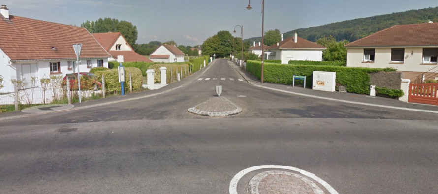

Debut de la fin
Vous êtes à nouveau seul et il est maintenant temps de finir ce que vous avez commencé,
et vous vous remémorez tous vos exploits et les difficultés que vous avez rencontré sur le chemin,
puis vous pensez à quand vous arriverezzz chez votre famille, à quand vous les prendrez dans vos bras etc.
Prendre une vrai douche et vous couchez dans un vrai lit, dormir de vrai nuit.
Et même si les zombies viennes jusqu’à vous vous serez près à vous battre
pour votre famille avec votre famille vous ne serrez plus seul.